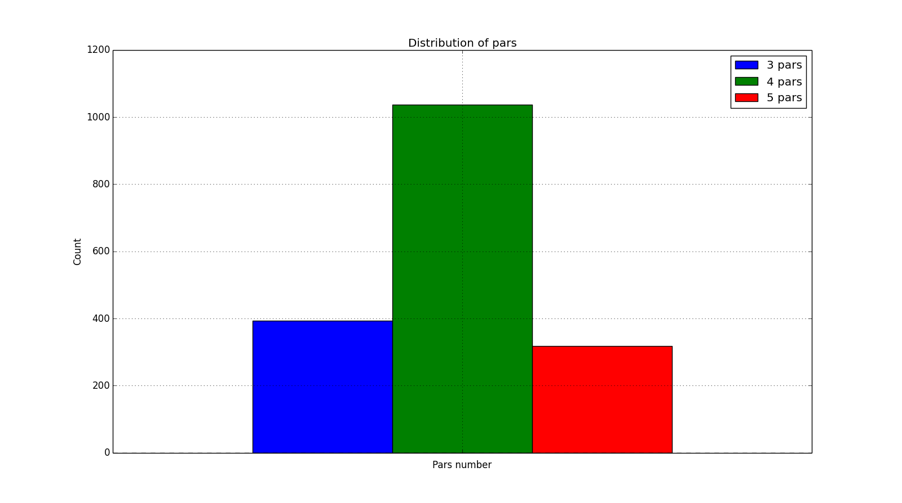
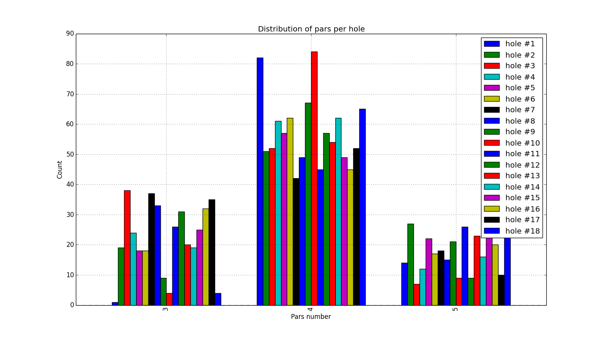
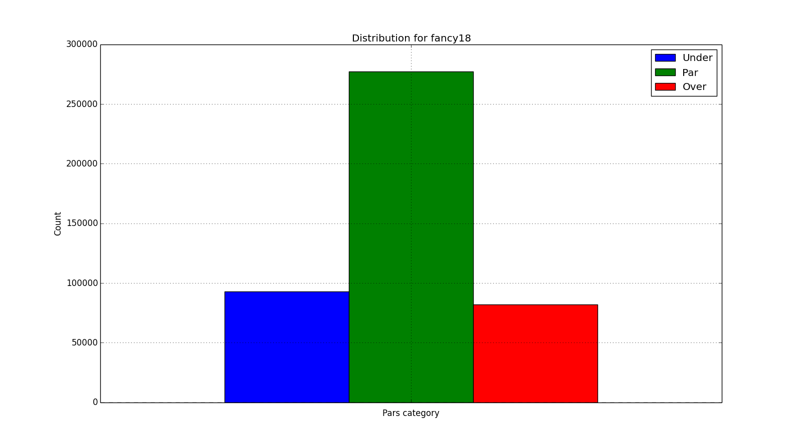
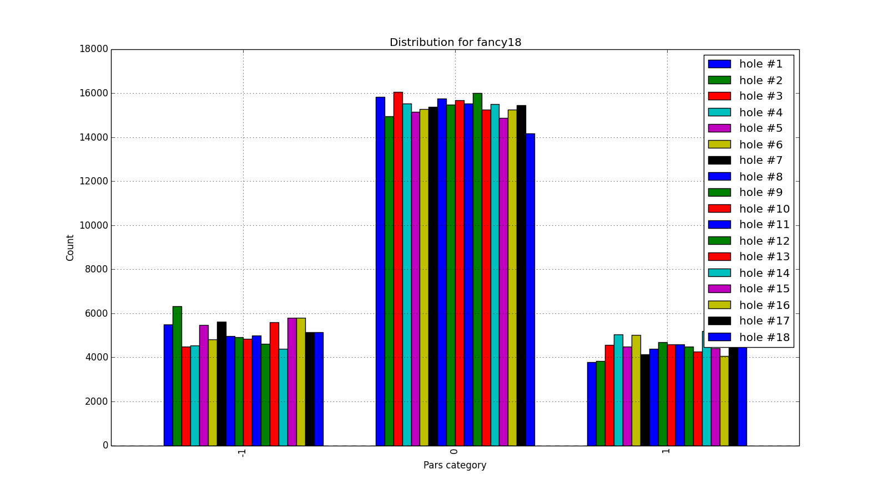
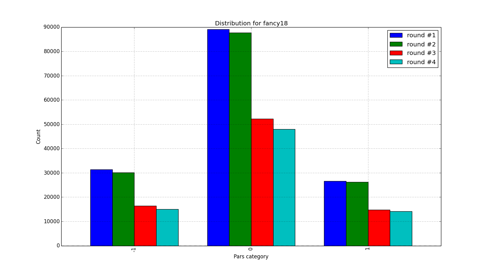
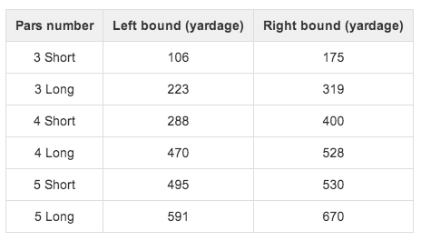
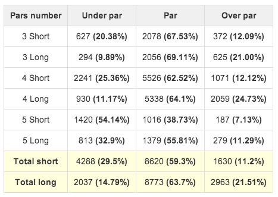
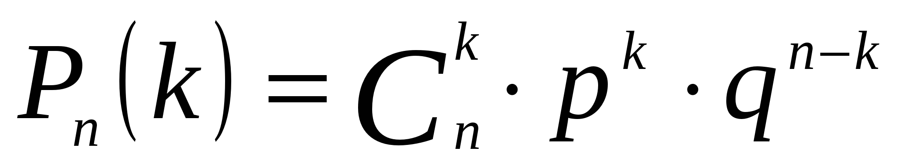
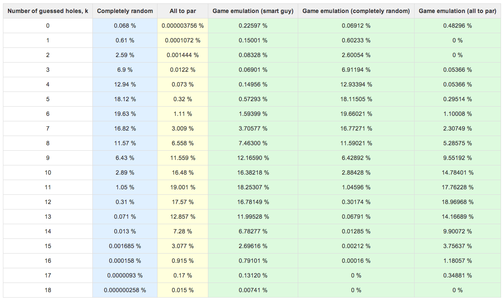
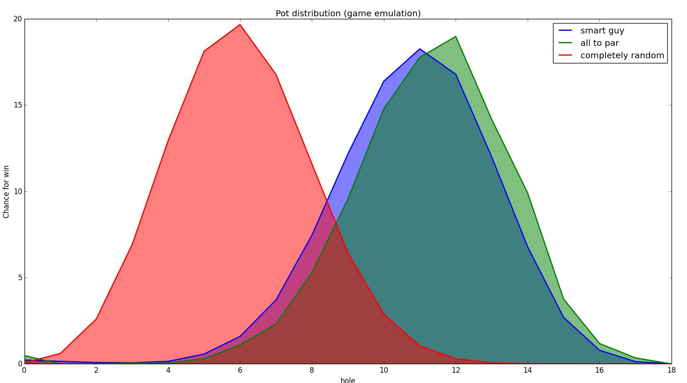

Golf data introduction
What are the goals?
Better understanding the Golf data
Better understanding where users can cheat the system
Fancy 18: Pot distribution and efficiency
Fancy 18: Pot distribution and efficiency
Input data
Season: 2012-2014
Tour: PGA Tour
Number of tournaments: 99
Number of rounds: 396
Number of strokes: 451728
Holes analysis
Holes analysis

Holes analysis

Strokes analysis
Strokes analysis

Strokes analysis

Strokes analysis

Strokes analysis: Conclusion
From hole to hole, from round to round all events happens pretty evenly
Only not evenly distribution for "par", "over par", "under par":
Over Par = 18.12%
Par = 61.32%
Under Par = 20.56%
Short and long holes
Short and long holes

Short and long holes

Pot distribution problem
Pot distribution problem: Math

Pot distribution problem: Game emulation
TOP 30
1,000 cards per golfer per tournament (season 2012-2014)
Total number of cards: 3,727,000
Pot distribution problem
Math calculation (completely random)
Math calculation (all to par)
Game emulation (smart guy)
Game emulation (completely random)
Game emulation (all to par)
Pot distribution problem

Pot distribution problem

Pot distribution problem
Possible solution